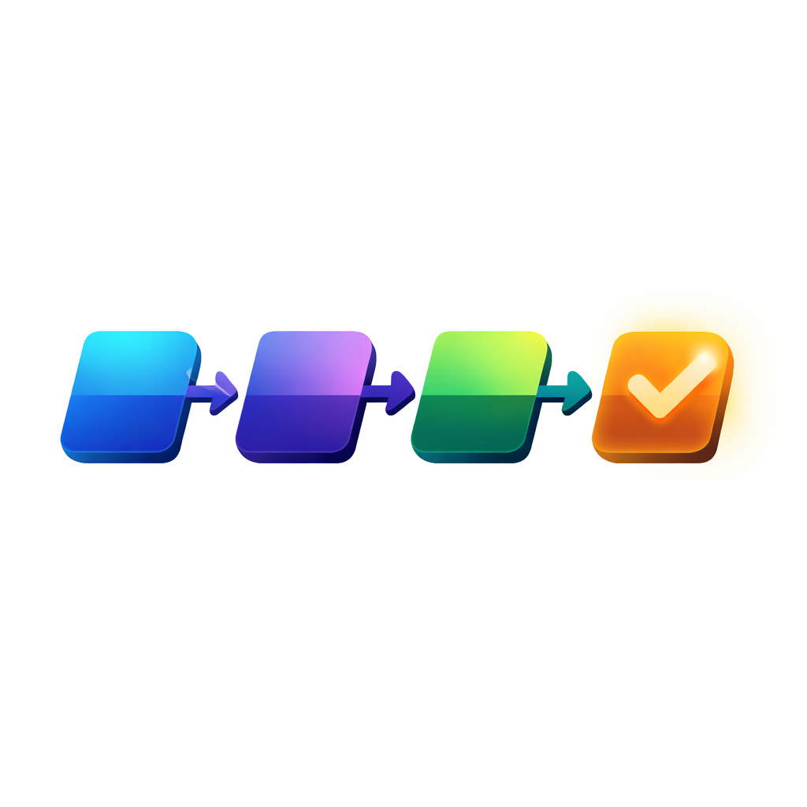

Titles.
Khi workflow rõ ràng, việc có thể mở rộng & dễ giao việc cho người mới.
Tôi đi vào cách công việc thực sự đang diễn ra — không phải trên lý thuyết — để thiết kế lại thành workflow rõ ràng và công cụ hỗ trợ đúng ngữ cảnh.

Nội dung đi theo bố cục rõ ràng: Hiểu cách làm hiện tại → phân tích điểm nghẽn → thiết kế lại luồng → tạo công cụ hỗ trợ → triển khai thực tế
Từ Thực Tế Thành Thành Công Cụ
Tôi làm việc theo workflow đã có, thiết kế công cụ phù hợp, sử dụng ngay.
Hiểu Đúng Workflow
Tôi phân tích cách công việc thực sự đang diễn ra trong nội bộ.
Quan sát cách công việc đang diễn ra - Xác định các điểm nghẽn, bước thừa, bước thiếu - Phân biệt giữa “thói quen” và “quy trình cần thiết”
Workflow Audit - Phân tích thực tế
Logic Đúng Workflow
Hình ảnh và mô tả hóa việc làm.
Sắp xếp lại các bước theo logic tối ưu - Chuẩn hóa input → process → output - Định nghĩa rõ vai trò từng bước
Workflow Redesign - Thiết kế lại luồng
Thiết Kế Tool Hỗ Trợ Workflow
Thiết kế tool hỗ trợ workflow nội bộ.
Thiết kế tool phù hợp với workflow - Có thể là: Web app nội bộ/Dashboard quản lý/File xử lý dữ liệu - Thiết kế theo cách người dùng thực sự thao tác
Tool Design - Thiết kế công cụ
Các Gói Triển Khai
Xây dựng thông tin dùng được.
- Tư vấn thông tin
- Viết lại quy trình
- Viết lại cách làm
- Đóng gói tài liệu (max 20 trang. Có thể mở rộng)
Thiết kế hình ảnh minh họa.
- Tư vấn hình ảnh
- Thiết kế hình minh họa infographic 5 hình
- Đóng gói thành tài liệu mô tả hình ảnh
Thiết kế công cụ ứng dụng.
- Tư vấn thiết kế công cụ
- Thiết kế giao diện công cụ
- Lập trình ứng dụng
Sẵn Sàng Trao Đổi Gói Phù Hợp?
Hãy cùng trao đổi trực tiếp để thiết kế phần mềm cho công việc của bạn.
Từ 2pm-5pm.